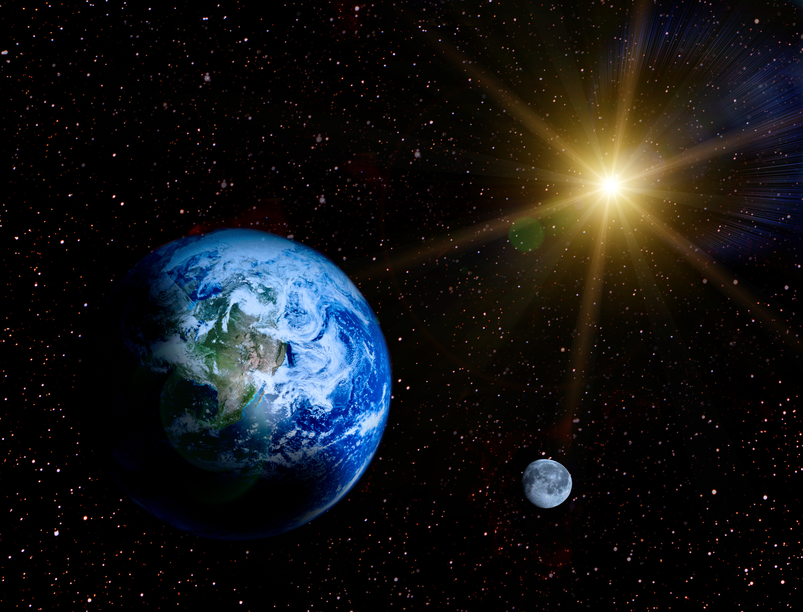
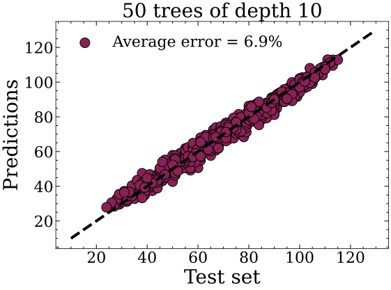
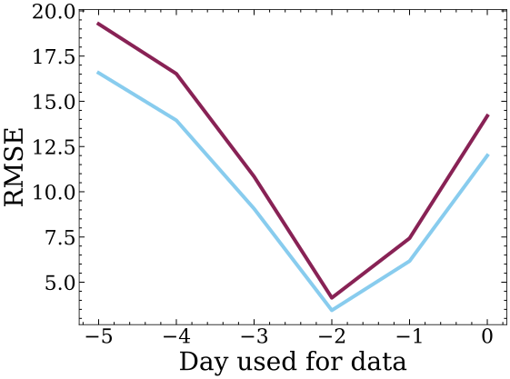

A machine learning project using celestial data from ephemerides and recorded daily tide coefficients to predict tide coefficients using Random Forest methods. This project was developed as a first experience with machine learning in the context of engineering school competitive exams focused on ocean systems.

This project explores the use of Random Forest regression to model and predict tide coefficients based on astronomical features such as angular and radial positions of the Sun and the Moon, while discarding local features specific to the city considered, here Brest and Le Havre. This was a first experience with machine learning methods, coding the model from scratch in the context of a project for the competitive exams of engineering schools where the theme was oceans.
Daily ephemerides + tide coefficient records from French coastal cities.
Angular positions, distances, and interaction terms between Sun and Moon. Periodic encoding using trigonometric functions.
Random Forest Regressor trained on engineered astronomical features.
Metrics used: MAE and RMSE on unseen test data.
The raw dataset consists of the celestial positions of the Moon and the Sun: \(\theta_S, \phi_S, R_{ST}, \theta_L, \phi_L, R_{LT}\), where \(R\) denotes the distance between the Earth and the corresponding celestial object, \(\theta\) is the ecliptic longitude, and \(\phi\) is the ecliptic latitude.
Since angles are periodic, representing them directly can be problematic, as 0° and 359° are almost equivalent but completely different for the trees. We encode periodicity using trigonometric transformations: \(\cos(\theta_S)\) and \(\cos(\theta_L)\).
Physical insights suggest that tidal effects depend on the relative alignment of the Moon and the Sun. When both are aligned, their contributions reinforce each other, leading to stronger tides. When they are perpendicular, the effect is weaker: we introduce \(\cos(\theta_S - \theta_L)\) to capture this alignment effect.
Because of the ocean's inertia, the tides have a delay compared to their gravitational causes as depicted in the results section. Therefore, we introduce a 2-day delay between inputs and outputs.
We could use the inverse of the squared distance, as this is the term that appears in Newton's gravitational law, but because we use decision trees that only perform comparisons and this function is monotonic, it would not affect the predictions.

